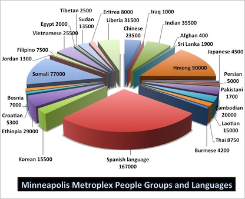

The Unreached at Our Doorstep
By Tim Svoboda
Dear YWAM Leaders,
I have recently written two emails. The first one talks about the strategic nature of small cities. The second one talks about how we can multiply in the larger cites where we have just one base. Also some years back, I wrote a series of emails titled, The Urban Challenge which also gives some thoughts on how we can be effective in cities as YWAM.
The Unreached at Our Doorstep
In this email I would finally like to talk about the Strategic Nature of Cities and the Unreached at our doorstep. Ray Bakke, an urban missiologist has said there are three engines driving the world today; Urbanization, Globalization and Asianization. Not only is the world moving to cities but some of the key unreached people groups are now within cities where churches already are. And this is not just true in the western world. There are large migrant flows into cities all over the world. Seemingly mono-ethnic, mono-language cities like Chennai in Tamil Nadu, India have large populations of non Tamil speaking, unreached people such as the Jains. The same could be said for Italy where there is a large population of North African Muslims, within the shadows of the spires of many churches.
Our Western YWAM bases have had the right emphasis on sending missionaries into the 10/40 window, but in the last 20 years the 10/40 Window got wheels and has moved into cities like London, Berlin, Perth, Chicago and other cities. As Dr. Bakke points out, England once ruled 52 nations and today all 52 of those nations are now found in London. He calls it “the empire strikes back syndrome.” We also see the same in how once Holland ruled Indonesia and now Indonesians are in Holland, how Germany once built a railroad to Turkey and now more than 2 million Turks live in Germany and how France once ruled in Africa and now Paris is teeming with Africans.
England once ruled 52 nations and today all 52 of those nations are now found in London.
I was recently in Minneapolis helping the local YWAM base on the outskirts of the city to start thinking together with them about how they could multiply ministry sites within the Minneapolis /St. Paul twin city area. Minneapolis is a cold Northern city that logically would not attract immigrants from warm climate countries. But as we began to take a closer look at Minneapolis you discover a large population of unreached people groups. The pie chart below lists some of the unreached people groups of the city, as well as some of the larger language groups that have a sizable amount of Christians in them, such as the Korean or Spanish sections.

This is midwestern Minneapolis which is not even a major port city nor a city with a population over 4 million people. What about Berlin, Copenhagen, London, Durban, Moscow, Sydney and a host of other cities in the western world where immigrants are pouring into? The United States, Russia, Germany, Saudi Arabia, United Arab Emirates, United Kingdom, France, Canada, Australia and Spain are the largest immigrant receiving nations in that order. The flow of migrants worldwide is changing the demographics for missions.
Again looking at the pie chart above we need to ask the question; How many YWAM operating locations or teams are needed in such a key location? As YWAM Minneapolis begins pondering their location, they are starting to realize that one base for the city is not enough and not even relevant to the needs that God has brought to their doorstep.
Last year in Houston, Texas, the Frontier Missions Network and Urban Network met at the same venue to hold our separate conferences, but came together during a couple of sessions and shared our meal times and worship times together. We began to see how strategic we can be as we remain as two separate networks but partnering together with our areas of expertise for the evangelization of our cities and unreached people groups with those cities. The Urban Frontiers are a reality that we as YWAM have to consider on every continent. Frontier Missions must multiply their presence in cities and the Urban Network must become more focused on the frontier peoples in their cities. We saw in Houston how much we need one another, so our circles overlap and infect each other with our specialties.
Take a look at the cities in your region and your area and let's dream together of how we can pioneer new YWAM long term presences that engage the Unreached People groups that are in our cities.
Tim Svoboda